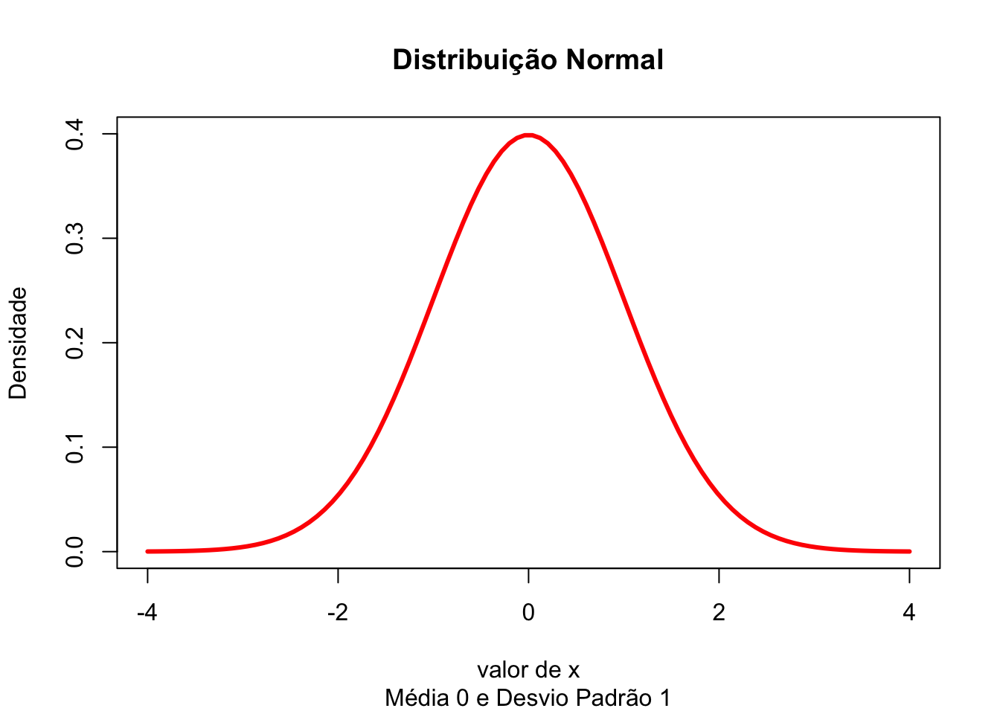
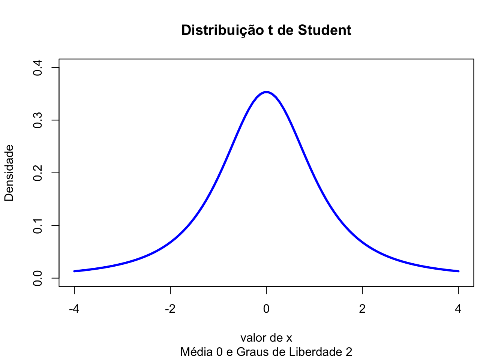
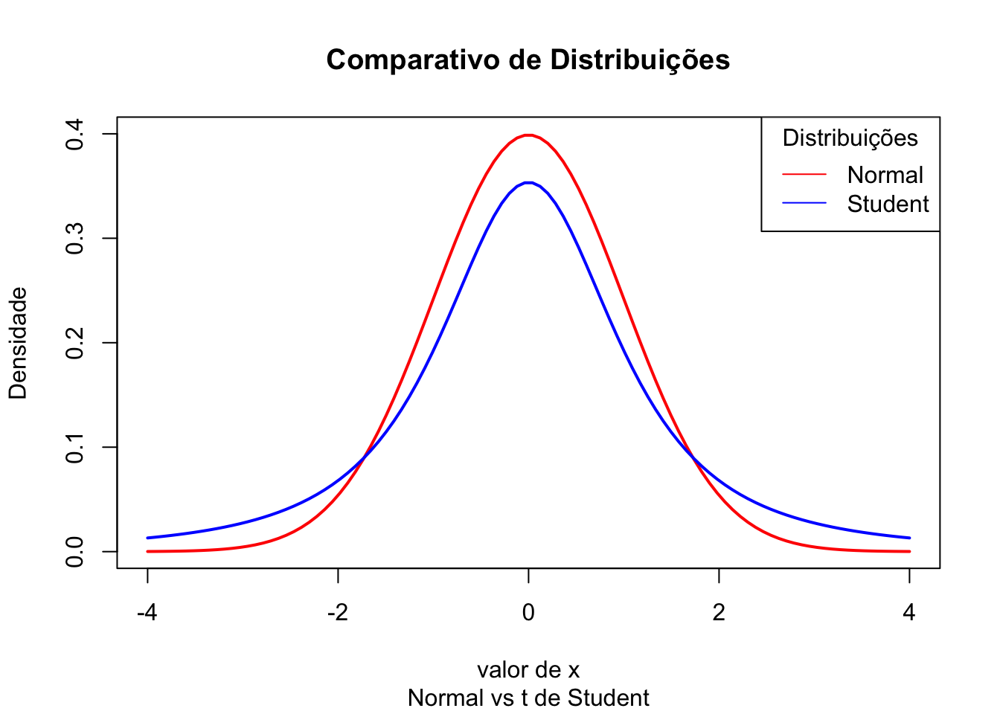
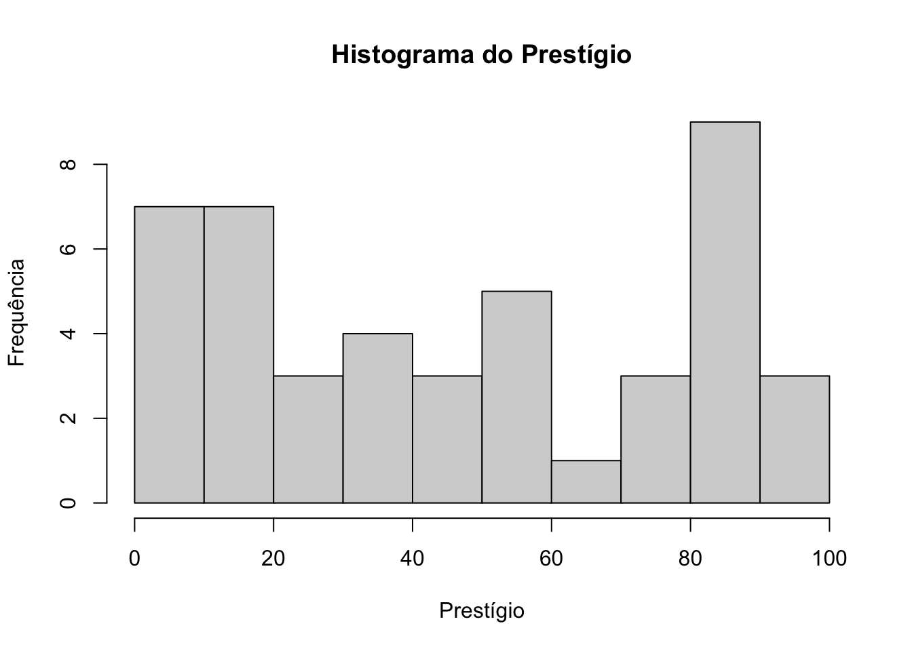
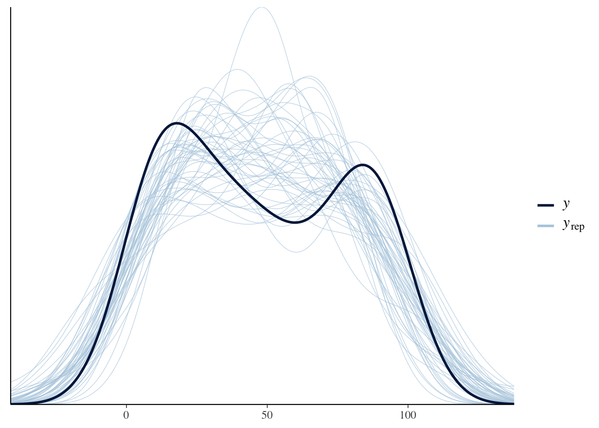
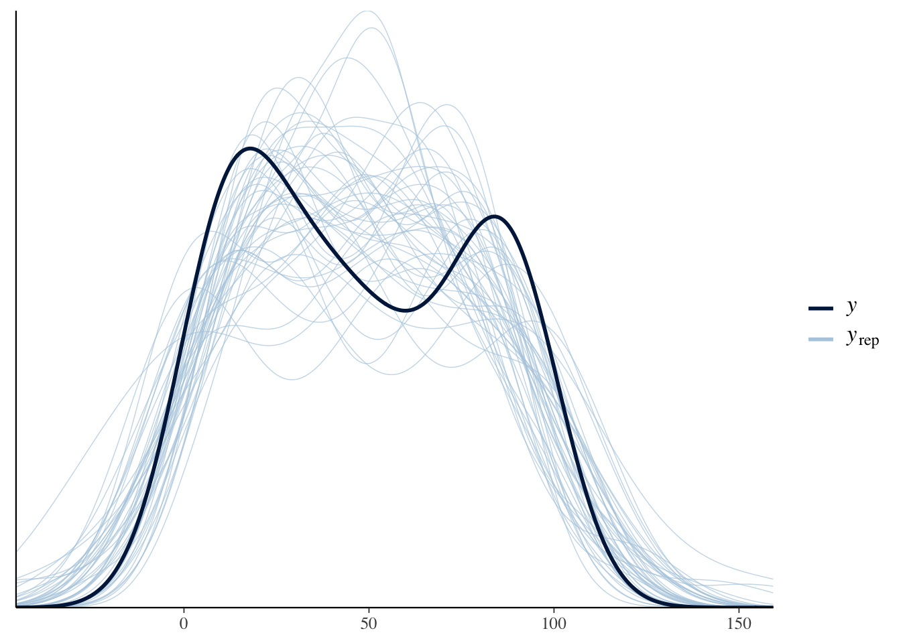

Lembrando da curva normal gaussiana que possui um formato de sino. Ela não é muito alongada nas “pontas”. Ou seja, as observações não fogem muito da média. Quando usamos essa distribuição como verossimilhança na inferência modelos Bayesianos, forçamos a que todas as estimativas sejam condicionadas à uma distribuição normal da variável dependente. Se nos dados houverem muitas observações com valores discrepantes (bem diferentes da média - outliers), isso faz com que as estimativas dos coeficientes das variáveis independentes fiquem instáveis. Isso ocorre porquê a distribuição normal não consegue contemplar observações muito divergentes da média sem mudar a média de local.
x <- seq(-4, 4, length = 100)
plot(x, dnorm(x),
type = "l",
col = "red",
lwd = 3,
xlab="valor de x",
ylab="Densidade",
main="Distribuição Normal",
sub = "Média 0 e Desvio Padrão 1",
xlim = c(-4, 4),
ylim = c(0, 0.4))
Então precisamos de uma distribuição mais “maleável” como verossimilhança. Precisamos de uma distribuição que seja mais robusta à observações discrepantes (outliers). Precisamos de uma distribuição similar à Normal mas que possua caudas mais longas para justamente contemplar observações muito longe da média sem ter que mudar a média de local. Para isso temos a distribuição t de Student. Lembrando o formato dela:
x <- seq(-4, 4, length = 100)
plot(x, dt(x, 2),
type = "l",
col = "blue",
lwd = 3,
xlab="valor de x",
ylab="Densidade",
main="Distribuição t de Student",
sub = "Média 0 e Graus de Liberdade 2",
xlim = c(-4, 4),
ylim = c(0, 0.4))
Reparem nas caudas:
plot(NA, xlab="valor de x",
ylab = "Densidade",
main = "Comparativo de Distribuições",
sub = "Normal vs t de Student",
xlim = c(-4, 4),
ylim = c(0, 0.4))
lines(x, dnorm(x), lwd = 2, col = "red")
lines(x, dt(x, df = 2), lwd = 2, col = "blue")
legend("topright", legend=c("Normal", "Student"),
col=c("red", "blue"), title="Distribuições", lty=1)
brmsO rstanarm não possui a possibilidade de usar distribuições t de Student como verossimilhança do modelo Bayesiano. Para usarmos distribuições t de Student, precisamos do pacote brms. O brms usa a mesma síntaxe que o rstanarm e a única diferença é que o brms não possui os modelos pré-compilados então os modelos devem ser todos compilados antes de serem rodados. A diferença prática é que você irá esperar alguns instantes antes do R começar a simular MCMC e amostrar do modelo.
A função que usa-se para designar modelos lineares no brms é a brm():
brm(y ~ x1 + x2 + x3,
data = df,
family = student)Para exemplicar regressão robusta vamos usar um dataset que tem muitas observações discrepantes (outliers) chamado Duncan. Ele possui 45 observações sobre ocupações nos EUA e 4 variáveis:
type: Tipo de ocupação. Uma variável qualitativa:
prof - profissional ou de gestãowc - white-collar (colarinho branco)bc - blue-collar (colarinho azul)income: Porcentagem de pessoas da ocupação que ganham acima $ 3.500 por ano em 1950 (mais ou menos $36.000 em 2017);education: Porcentagem de pessoas da ocupação que possuem diploma de ensino médio em 1949 (que, sendo cínicos, podemos dizer que é de certa maneira equivalente com diploma de Doutorado em 2017); eprestige:Porcentagem de respondentes na pesquisa que classificam a sua ocupação como no mínimo “boa” em respeito à prestígio.duncan <- read.csv2("datasets/Duncan.csv", row.names = 1, stringsAsFactors = T)
hist(duncan$prestige,
main = "Histograma do Prestígio",
xlab = "Prestígio",
ylab = "Frequência")
Vamos estimar primeiramente uma regressão linear usando a distribuição Normal como verossimilhança:
library(rstanarm)
model_1 <- stan_glm(
prestige ~ income + education,
data = duncan,
family = gaussian
)E na sequência o sumário das estimativas do modelo, assim como os diagnósticos da MCMC:
summary(model_1)##
## Model Info:
## function: stan_glm
## family: gaussian [identity]
## formula: prestige ~ income + education
## algorithm: sampling
## sample: 4000 (posterior sample size)
## priors: see help('prior_summary')
## observations: 45
## predictors: 3
##
## Estimates:
## mean sd 10% 50% 90%
## (Intercept) -6.1 4.4 -11.7 -6.1 -0.5
## income 0.6 0.1 0.4 0.6 0.8
## education 0.5 0.1 0.4 0.5 0.7
## sigma 13.7 1.6 11.8 13.6 15.8
##
## Fit Diagnostics:
## mean sd 10% 50% 90%
## mean_PPD 47.7 2.9 44.0 47.7 51.3
##
## The mean_ppd is the sample average posterior predictive distribution of the outcome variable (for details see help('summary.stanreg')).
##
## MCMC diagnostics
## mcse Rhat n_eff
## (Intercept) 0.1 1.0 4578
## income 0.0 1.0 2159
## education 0.0 1.0 2127
## sigma 0.0 1.0 2793
## mean_PPD 0.1 1.0 3243
## log-posterior 0.0 1.0 1584
##
## For each parameter, mcse is Monte Carlo standard error, n_eff is a crude measure of effective sample size, and Rhat is the potential scale reduction factor on split chains (at convergence Rhat=1).Aparentemente parece que o modelo possui boas métricas mas quando olhamos o posterior predictive check, vemos uma bagunça:
pp_check(model_1, nsamples = 45)## Warning: The following arguments were unrecognized and ignored: nsamples
Para rodar um modelo Bayesiano que usa como verossimilhança a distribuição t de Student é somente usar a mesma síntaxe que o stan_glm mas colocando argumento family = student:
library(brms)## Loading 'brms' package (version 2.14.4). Useful instructions
## can be found by typing help('brms'). A more detailed introduction
## to the package is available through vignette('brms_overview').##
## Attaching package: 'brms'## The following objects are masked from 'package:rstanarm':
##
## dirichlet, exponential, get_y, lasso, ngrps## The following object is masked from 'package:stats':
##
## armodel_2 <- brm(
prestige ~ income + education,
data = duncan,
family = student
)## Compiling Stan program...## Start samplingE na sequência o sumário das estimativas do modelo, assim como os diagnósticos da MCMC. Vemos que as estimativas não alteraram muito. Além disso temos um novo parâmetro estimado pelo modelo que é o parâmetro nu (\(\nu\)), que é os graus de liberdade da distribuição t de Student usada como verossimilhança:
summary(model_2, prob = 0.9)## Family: student
## Links: mu = identity; sigma = identity; nu = identity
## Formula: prestige ~ income + education
## Data: duncan (Number of observations: 45)
## Samples: 4 chains, each with iter = 2000; warmup = 1000; thin = 1;
## total post-warmup samples = 4000
##
## Population-Level Effects:
## Estimate Est.Error l-90% CI u-90% CI Rhat Bulk_ESS Tail_ESS
## Intercept -6.74 4.21 -13.74 0.28 1.00 4888 3382
## income 0.66 0.14 0.43 0.88 1.00 1943 2395
## education 0.51 0.11 0.33 0.69 1.00 1952 2427
##
## Family Specific Parameters:
## Estimate Est.Error l-90% CI u-90% CI Rhat Bulk_ESS Tail_ESS
## sigma 12.33 1.93 9.13 15.44 1.00 1989 1486
## nu 18.05 13.26 3.41 43.74 1.00 1806 1549
##
## Samples were drawn using sampling(NUTS). For each parameter, Bulk_ESS
## and Tail_ESS are effective sample size measures, and Rhat is the potential
## scale reduction factor on split chains (at convergence, Rhat = 1).Mas a posterior predictive check ficou com um aspecto muito melhor que o modelo linear:
pp_check(model_2, nsamples = 45)
brmsbrms possui as seguintes configurações como padrão de priors para regressão robusta usando t de Student:
prior = student_t(3, median_y, mad_y), class = interceptprior = normal(0, 2.5 * 1/sd_xk)sigma): t de Student com média \(\mu = 0\), desvio padrão de \(\max(2.5, MAD(y)\) e graus de liberdade \(3\) - prior = student_t(3, 0, mad_y), class = sigmanu): distribuição gamma com \(\alpha = 2\) e \(\beta = 0.1\) - prior = gamma(2, 0.1), class = nuO dataset Boston Housing está disponível em datasets/Boston_Housing.csv. Possui 506 observações e possui 14 variáveis:
CRIM - per capita crime rate by townZN - proportion of residential land zoned for lots over 25,000 sq.ft.INDUS - proportion of non-retail business acres per town.CHAS - Charles River dummy variable (1 if tract bounds river; 0 otherwise)NOX - nitric oxides concentration (parts per 10 million)RM - average number of rooms per dwellingAGE - proportion of owner-occupied units built prior to 1940DIS - weighted distances to five Boston employment centresRAD - index of accessibility to radial highwaysTAX - full-value property-tax rate per $10,000PTRATIO - pupil-teacher ratio by townB - 1000(Bk - 0.63)^2 where Bk is the proportion of blacks by townLSTAT - % lower status of the populationMEDV - Median value of owner-occupied homes in $1000’s###sessionInfo()## R version 4.0.3 (2020-10-10)
## Platform: x86_64-apple-darwin17.0 (64-bit)
## Running under: macOS Big Sur 10.16
##
## Matrix products: default
## LAPACK: /Library/Frameworks/R.framework/Versions/4.0/Resources/lib/libRlapack.dylib
##
## locale:
## [1] en_US.UTF-8/en_US.UTF-8/en_US.UTF-8/C/en_US.UTF-8/en_US.UTF-8
##
## attached base packages:
## [1] stats graphics grDevices utils datasets methods base
##
## other attached packages:
## [1] brms_2.14.4 carData_3.0-4 gapminder_0.3.0 skimr_2.1.2 rstanarm_2.21.1 Rcpp_1.0.5 readxl_1.3.1
##
## loaded via a namespace (and not attached):
## [1] minqa_1.2.4 colorspace_2.0-0 ellipsis_0.3.1 ggridges_0.5.2 rsconnect_0.8.16 markdown_1.1
## [7] base64enc_0.1-3 farver_2.0.3 rstan_2.21.2 DT_0.16 mvtnorm_1.1-1 fansi_0.4.1
## [13] bridgesampling_1.0-0 codetools_0.2-18 splines_4.0.3 knitr_1.30 shinythemes_1.1.2 projpred_2.0.2
## [19] bayesplot_1.7.2 jsonlite_1.7.1 nloptr_1.2.2.2 shiny_1.5.0 compiler_4.0.3 backports_1.2.0
## [25] assertthat_0.2.1 Matrix_1.2-18 fastmap_1.0.1 cli_2.2.0 later_1.1.0.1 htmltools_0.5.0
## [31] prettyunits_1.1.1 tools_4.0.3 igraph_1.2.6 coda_0.19-4 gtable_0.3.0 glue_1.4.2
## [37] reshape2_1.4.4 dplyr_1.0.2 V8_3.4.0 cellranger_1.1.0 vctrs_0.3.5 nlme_3.1-150
## [43] crosstalk_1.1.0.1 xfun_0.19 stringr_1.4.0 ps_1.4.0 lme4_1.1-26 mime_0.9
## [49] miniUI_0.1.1.1 lifecycle_0.2.0 gtools_3.8.2 statmod_1.4.35 MASS_7.3-53 zoo_1.8-8
## [55] scales_1.1.1 colourpicker_1.1.0 promises_1.1.1 Brobdingnag_1.2-6 parallel_4.0.3 inline_0.3.17
## [61] shinystan_2.5.0 gamm4_0.2-6 yaml_2.2.1 curl_4.3 gridExtra_2.3 ggplot2_3.3.2
## [67] loo_2.3.1 StanHeaders_2.21.0-6 stringi_1.5.3 highr_0.8 dygraphs_1.1.1.6 boot_1.3-25
## [73] pkgbuild_1.1.0 repr_1.1.0 rlang_0.4.9 pkgconfig_2.0.3 matrixStats_0.57.0 evaluate_0.14
## [79] lattice_0.20-41 purrr_0.3.4 rstantools_2.1.1 htmlwidgets_1.5.2 labeling_0.4.2 processx_3.4.5
## [85] tidyselect_1.1.0 plyr_1.8.6 magrittr_2.0.1 R6_2.5.0 generics_0.1.0 mgcv_1.8-33
## [91] pillar_1.4.7 withr_2.3.0 xts_0.12.1 survival_3.2-7 abind_1.4-5 tibble_3.0.4
## [97] crayon_1.3.4 utf8_1.1.4 rmarkdown_2.5 grid_4.0.3 callr_3.5.1 threejs_0.3.3
## [103] digest_0.6.27 xtable_1.8-4 tidyr_1.1.2 httpuv_1.5.4 RcppParallel_5.0.2 stats4_4.0.3
## [109] munsell_0.5.0 shinyjs_2.0.0